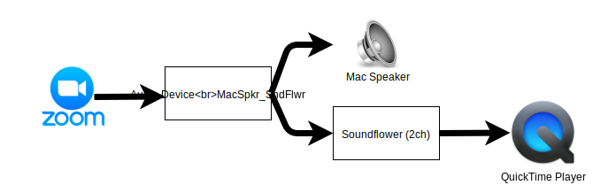
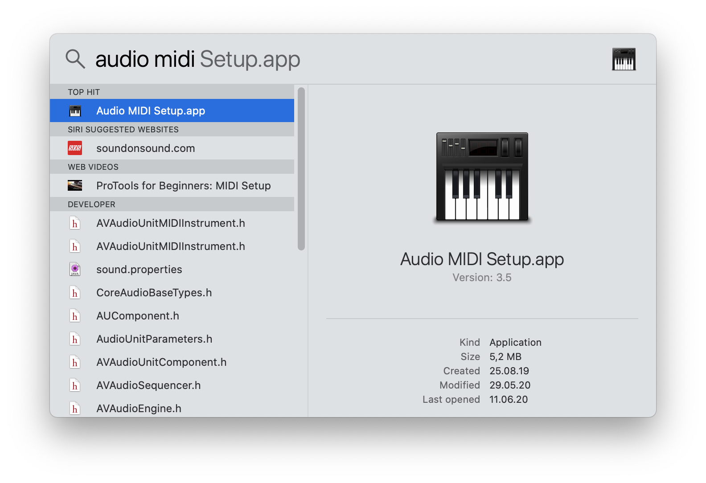
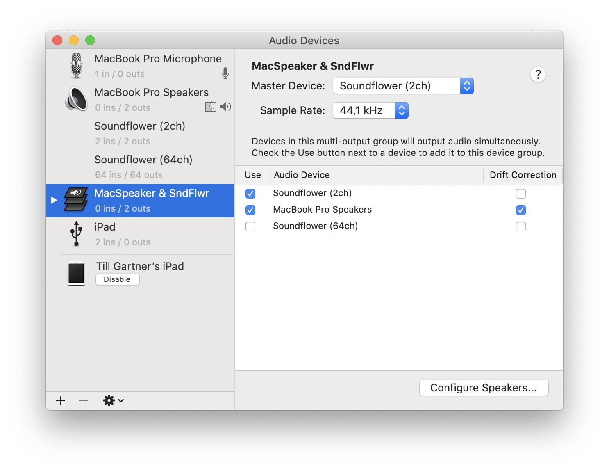
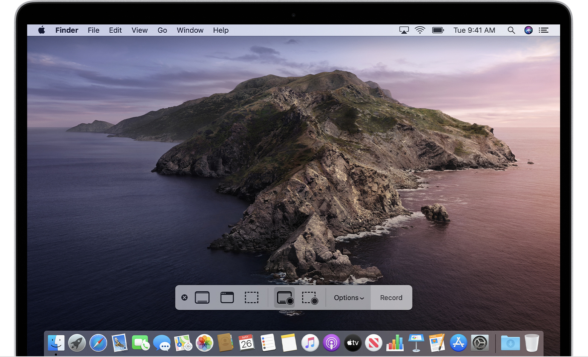

Mac: Recording screen & sound
June 11, 2020TL;DR In order to record the screen of your Mac together with the sound (i.e. a Zoom session) you can use Soundflower.
Here is what I wanted to achieve: Make a (video) recording of what is happening on the screen of my Mac including the sound. All this, while still hearing what is happening at the same time. In my case I wanted to record a Zoom-Class, but I guess this is a setup that might be useful in many situations.
macOS comes with a great built-in screen recording tool:QuickTime Player (yes, it records, even though the name says player 😀).
When using QuickTime Player the only problem is the sound: The choices you have are Internal Microphone or None. That fits well if you want to record a tutorial where the sound is what you explain through the microphone, but it doesn’t fit my situation.
This is where SoundFlower comes in the picture. It’s Open Source, mature and reliable (tested by me and far more experienced fellows - and always got very good reviews). SoundFlower as it is today (that’s Summer 2020) is not a program with a User Interface, but only a MacOS system extension. That’s something you don’t see as a user but that is very helpful in the background.
What it does in our case: It creates a new, virtual sound channel that splits the sound stream into 2 other streams. In my case it means that in my Zoom session I select a virtual output instead of the speaker of my Mac. I called this output MacSpkr_SndFlwr. And this virtual stream splits the output to the Speaker of the Mac and the (logical) SoundFlower channel. Then I select the SoundFlower channel as input to my QuickTime Player Recording and that’s it.
The Sound Streams
Setting it all up
Installing Soundflower is well described on it’s download page on Github. The process might seem a bit clumsy but works well if you follow it step by step. Note that it took me a while to figure out what they meant by “Once there, there should be an “Allow” button () that you will need to click on to give permission to use Soundflower (developer: MATT INGALLS).” I was expecting a popup dialog with the Allow-button, but it’s simply a button within the window.
Also note that you need to reboot your Mac after installing Soundflower.
Once you have Soundflower installed you can create a logical Audio Device that will be slipping the sound stream. To do so, open Audio MIDI Setup. It is a macOS utility program located in /Applications/Utilities. You can also start it via Spotlight (hit Cmd + Space) and enter “Audio Midi”

Starting the Audio MIDI Setup via Spotlight
Once you are in the Audio MIDI Setup program, create a new (logical) Audio Device: hit the “+” button in the bottom left corner and select “Create Multi Output Device“. In the the panel that appears on the right, select “MacBook Speaker” AND “Soundflower (2ch)“.

The newly created Multi Output Device
Then launch your QuickTime Player (this one comes pre-installed on your Mac) and create a new Screen Recording: Menu File ➡ New Screen Recording. In the lower part of the screen a floating menu appears:

The floating menu when recording with QuickTime Player
Open the Options list and select “Soundflower (2ch)” as input for the recording. Click on “Record” and off you go: Now start your Zoom session, maximize the window and your entire Zoom session will be recorded in a .mov file.
I hope this instructions were helpful; feel free to ask questions if you have any.
References
- How to record the screen on your Mac from Apple Support
- Soundflower explanations
- Record your computer’s screen with audio on a Mac from c|net